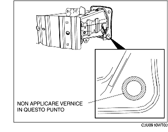

RIMOZIONE/INSTALLAZIONE RINFORZO PARAURTI ANTERIORE
B3E091050070W01
1. Rimuovere il paraurti anteriore. (Vedere RIMOZIONE/INSTALLAZIONE PARAURTI ANTERIORE).
2. Rimuovere il gruppo ottico anteriore. (Vedere RIMOZIONE/INSTALLAZIONE GRUPPO OTTICO ANTERIORE.)
3. Rimuovere l'avvisatore acustico. (Vedere RIMOZIONE/INSTALLAZIONE AVVISATORE ACUSTICO).
4. Posizionare i componenti elencati di seguito in modo che non siano d'intralcio
-
(1) Coperchio inferiore
-
(2) Pompa olio servosterzo elettrico (LF)
-
(3) Serbatoio lavacristalli
5. Rimuovere nell'ordine indicato in tabella.
-
Avvertenza
-
• Se il bullone A (e cioè quello in basso a sinistra) viene rimosso, sostituirlo sempre con la parte di ricambio speciale (codice BPYK 50 0Z2) per assicurare un corretto collegamento a massa dell'avvisatore acustico.
|
1
|
Bullone A
|
|
2
|
Bullone B
|
|
3
|
Rinforzo paraurti anteriore
|
6. Installare in ordine inverso rispetto alla rimozione.
7. Dopo l'installazione, verificare che l'avvisatore acustico funzioni correttamente.
Dettaglio installazione rinforzo paraurti anteriore
Riutilizzo del rinforzo paraurti anteriore
-
Avvertenza
-
• Per un corretto collegamento alla massa carrozzeria, non applicare la vernice nella zona in cui il bullone flangiato A tocca il rinforzo del paraurti anteriore.

Installare un nuovo rinforzo del paraurti anteriore
1. Rimuovere il nastro per mascheratura dal rinforzo del paraurti anteriore.
-
• Se il nastro per mascheratura è appena stato rimosso, eliminare ogni residuo di ruggine o di vernice.
2. Dopo aver installato il bullone A, applicare un pò di vernice sulla zona del rinforzo del paraurti anteriore non verniciata.